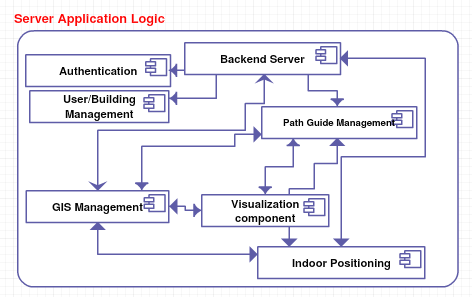

Our Amazing Team
Ramitha Kalana
ramithakalana@gmail.com
0779915744
Nipuni Prasadani
prasadikdn@gmail.com
0767347365
Kalanika Rajasekara
kalanika2013@gmail.com
0714067393

Sahan Perera
dsahanperera@gmail.com
0783851033
Above mentioned research gap gives the idea about the gap between the existing features that have provided by the existing systems. It clearly shows the benefits that users can get by using the approach that we are going to introduced. Followings are the brief descriptions about the research problems that we are going to introduce after completing our approach. Concept of having huge malls is quite new for Sri lankan. Even though we can see a rapid growth of having huge malls. Navigating through these malls without getting lost has become a considerable matter. Living in a era where everyone is having a busy life, having navigation through these malls is a necessity in order to save time. This era is famous for less social interactions but more interactions with the mobile devices and internet. In order to come up with a problem that is getting lost in a huge malls, can be output as the user’s favourable.
In Sri Lankans having a huge mall is a new Concept even though we can see a rapid growth of having huge malls. In an era where time is a very important and limited finding a place in a huge mall is a bit of a messy task to do if it is the first time at the mall. Been able to navigation through these malls is a necessity in order to save time. From the Research carried out on the new upcoming solutions for problems like these we came across applications that give a 3D view for a particular indoor environment, so that users can refer those and navigate through the mall. Creating an indoor environment one by one is time consuming and an expensive task since models must be created and must also input details on each and every location so to navigate through. It could be concluded that the feature that is not yet available in the new indoor navigation applications is to self-generate GIS environment for any given sample floor plan. Concept of having huge malls is quite new for Sri lankans. Even though we can see a rapid growth of having huge malls. Navigating through these malls without getting lost has become. In Sri Lankans having a huge mall is a new Concept even though we can see a rapid growth of having huge malls. In an era where time is a very important and limited finding a place in a huge mall is a bit of a messy task to do if it is the first time at the mall. Been able to navigation through these malls is a necessity in order to save time. From the Research carried out on the new upcoming solutions for problems like these we came across applications that give a 3D view for a particular indoor environment, so that users can refer those and navigate through the mall. Creating an indoor environment one by one is time consuming and an expensive task since models must be created and must also input details on each and every location so to navigate through. It could be concluded that the feature that is not yet available in the new indoor navigation applications is to self-generate GIS environment for any given sample floor plan. Concept of having huge malls is quite new for Sri lankans. Even though we can see a rapid growth of having huge malls. Navigating through these malls without getting lost has become a considerable matter. Living in a era where everyone is having a busy life, having navigation through these malls is a necessity in order to save time. Existing solution applications are giving 3D view for indoor, so that users can refer those and navigate through the mall, but the researchers prove that users tend to like actual view more. Huge the malls get more the users become confused about where they are and to where they should go. That’s the place where indoor positioning comes. Wifi fingerprinting and bluetooth beacons have used as the base of many existing indoor positioning systems. Problem they encounter was the range of Wifi and bluetooth. Calculations shows that the wifi has 32 meters range. Which is not enough to determine the location. The other main problem is to find the way to a specific place in a huge mall without getting lost. System should be able to display the shortest and the most preferable path to the user. Path that user selects can change according to the users’ preferences and it’s better if the the user has multiple options in this case. One of the existing ways of getting the shortest is to convert the images into a graph. But the drawback of that is it is time consuming. User might not want to spend some considerable amount of time till the application converts the images into a graph and then calculate the shortest path from that. Over the past years users had a hard time locating themselves to their intended destination.When it comes to huge shopping malls user gets confused about where they are and where they should go.It is a complicated task to find a shop inside a huge high complex shopping mall even with a pre knowledge of the buidling.How often have you had a hard time locating ourselves to the correct shop we were supposed to be in?How convenient would it be to have a hand held indoor navigation application that can be used to guide the user to their desired destination. For long as we can remember positioning it has been important to know where we are in the world in the olden days we used compass and maps to find our way around. Nowadays we use GPS to find our way when traveling by vehicles or foot.GPS is incredibly useful technology most of us rely on GPS in some form however there is big problem the GPS navigation doesn’t work inside an indoor environment.GPS signals can be reflected by walls making it less accurate and in cities.On an average day here in Sri Lanka we might walk miles to find our desired destination basically tracking own position of the customer and navigate to his/her intended destination in big complex building like shopping malls highly challenging task most of the shopping malls have several shops they can’t be easily monitored manually and finding a specific place inside a building especially when it’s the first time in that building is time consuming and higher probability of getting lost but using this application,user should be able to find the shortest path and the most popular path to user’s intended destination and user can locate themselves to the desired destination.In fact,It reduces time wastage because customers don't have to move around to find out a specific location instead,they channel that time into doing other important tasks. Many alternative solutions have been presented over the past years most of the technologies based on distance measurement to nearby wifi access points, magnetic field positioning and RSS.When it comes to fingerprinting method signal strength is collected from known locations and then store it in a database.When identifying the location the users current location coordinates are querying from the database if the users unknown coordinates is compared with the stored prior measured data so every time user need to identify his/her location user needs to query the unknown location coordinates and compare against to the stored data and most challenging task is the maintenance of the database and the storing the measured huge amount of data in the database and its time consuming. Above mentioned research gap gives the idea about the gap between the existing features that have provided by the existing systems. It clearly shows the benefits that users can get by using the approach that we are going to introduced. Followings are the brief descriptions about the research problems that we are going to introduce after completing our approach. Concept of having huge malls is quite new for Sri lankan. Even though we can see a rapid growth of having huge malls. Navigating through these malls without getting lost has become a considerable matter. Living in a era where everyone is having a busy life, having navigation through these malls is a necessity in order to save time. This era is famous for less social interactions but more interactions with the mobile devices and internet. In order to come up with a problem that is getting lost in a huge malls, can be output as the user’s favourable. One of the main problems is to find the way to a specific place in a huge mall without getting lost. System should be able to display the shortest and the most preferable path to the user. Path that user selects can change according to the users’ preferences and it’s better if the the user has multiple options in this case. One of the existing ways of getting the shortest is to convert the images into a graph. But the drawback of that is it is time consuming. User might not want to spend some considerable amount of time till the application converts the images into a graph and then calculate the shortest path from that. Getting the shortest path or the user preferable path has becoming more and more challengeable. Mostly because each and every commonly used or the existing algorithms consumes higher pre processing power and the memory. Mostly this higher pre processing power is required to generate the visibility graph. Some given solutions are proposing to minimize the size of the visibility graph so that the pre processing power can be saved. But the getting optimal path within a short time is the real challenge. As we can clearly see in the literature review, genetic algorithms can be used to get the shortest path. By developing a dynamic fitness function to each user optimal paths can be retrieved. Issue that occurs with the genetic algorithm is the accuracy. Since there are more local minimum and one global minimum drawback is the cannot be hundred percent assure that the algorithms reaches to the global minimum. There can be a scenarios where it reaches the local minimum and assuming it as the global minimum and stop the function running. Other challenge is since the GPS is not working fine in the environment, get the paths between given two nodes. Most of the approaches tries to convert the map into a graph but all those methods takes much time. Since this solution is going to be an android mobile application, I can't be expecting system to take much more pre processing time. Then the application will be slow and it will eventually caused to the user dissatisfaction. Giving the optimal path should be the ultimate goal but when achieving that goal, user satisfaction should be a key factor to consider.
Our main intention in this study is to, come up with a solution which has better indoor localization and visual based indoor navigation with intelligent path finder. The research team is willing to accomplish those objectives by developing a web application and a mobile application.
The system that is proposed in our research consist of 2 application. A web application and a mobile application. The web application is mostly handled by the system admin or owner of a particular building to upload the floor plans of the building and configure the building as required. Also the web application allows a 360 tour on the indoor environment for users trying to navigate through the web application. The web application is connected directly with the server and database with Restful APIs. The mobile application is built using android. This is targeted only for the users since it allows the users to navigate through the indoor environment using the shortest, most preferable and popular path. Also helps in in tracking the location of user in an indoor environment.
In the research done by Hande Hong, Kartik Sankaran from School Of Computing, National University of Singapore and Chengwen Luo and Jianqiang Li from collage of computer science and Software Engineering, Shenzhen University, China they had found a way to generate an indoor map using walking trajectories captured through inertial sensing and crowdsourcing where they merge all the paths to generate the indoor map. Also higher-level schematic objects such as doors, stairs, elevators etc. can be detected in this method of process. In their system they collect all the relevant data using mobile device and the server program collects all the crowdsourced trajectories and performs map inference and semantic-based localization queries to generate a map. However in this method of gathering information and configuring the floor plan, there have been some problems due to conflicts in repeating pathways. In a research by SungTae Moon, Wesub Eom from the Aerospace Convergence Technology Team, Korea Aerospace Research Institute proposed a design for large scale map generation which uses Simultaneous Localization and Mapping (SLAM) technologies that generates a 2D image of the map and later converts it into a 3D. Using Sensors such as LiDAR (Light Detection and Ranging), SONAR (Sound Navigation And Ranging) and RGB-D camera a 2D image can be generated with the help of Hector Simultaneous Localization and Mapping technology. This method of indoor mapping generated an accurate floor plan by using sensors. This method has proven useful however working with such devices is not economically beneficial for users or partners using that technology. In a research done by Xuan Du and Dongdai Zhou they found a way to generate a path from a Scalable Vector Graphic (SVG) which contains the polygons representing rooms’ outline, coordinates of rooms’ door and polylines indicating the corridors. Based on the data and the pathway mapping that was available they were able to identify a pathway graph for the indoor environment. However they were able to identify a pathway for each and every node only if the details were mentioned on the map graphically. Thus this method is only applicable for static indoor environments.
With the research references we did, we discovered there are few solutions for the individual components of our study. Over the years there were some number of researches has presented regarding those components, but there were some considerable number of issues in performance and the complexity of them are also bit high. From the research referencing which is done by our research team, we haven’t met any research which has all the components of our study. In the research done by R. Abhilash and P.Asha from Department of Computer Science, Sathyabama University they have discussed about an indoor navigation solution which is limited to a single area. In their proposed solution, both 2D and 3D maps will be displayed and by entering the source and the destination they will display the paths that they can use. Since they are not using Global positioning system (GPS) or any similar kind of technology user cannot find the path to the destination from his/her exact location. If we need to user this system in another place, we need to create a 3D model of that place as well. From a study our research team have done, we found that many users like to interact with the actual view than a 3D view. Athira Sudarsanan V, Michael George, Babita Roslind Jose and Jimson Mathew of Cochin University of Science And Technology, Kochi and Indian Institute of Technology Patna have discussed about the indoor navigation problem in a different perspective. Their approach was to generate a topological map and images from the different locations of the building using a walkthrough video. From this video, the system will extract the important frames (keyframes) and construct the topological map. We can apply this approach to anywhere and to take this approach first we need to have a walkthrough video of the whole building. In our approach first we need to capture 3600 images from a mobile phone or any other device in appropriate distance, and then apply them on top of the map. In the research done by Low Chee Huey, Patrick Sebastian and Micheal Drieberg of electrical and electronic engineering department, universiti Teknologi Petronas proposed and designed an augmented reality based indoor positioning navigation tool to superimpose the directional signage on the real view of the indoor environment in 3D form. The team have used ARtoolkit software to do the implementation and using ARtoolkit, application will display a 3D marker in the camera view, to guide the user to the destination. Since they are using a mobile application, users have to use their laptop webcam.
In the research done by R. Abhilash and P.Asha from Department of Computer Science, Sathyabama University they have discussed about an indoor navigation solution which is limited to a single area. In their proposed solution, both 2D and 3D maps will be displayed and by entering the source and the destination they will display the paths that they can use. Since user won’t be given shortest path user has to pick a random path and navigate through it which may results to user navigates through the longest path and which will consume time. In ICET conference at Ohrid, Macedonia have discussed about a solution for finding a shortest path in a Maze. To get that approach they have used a robot to navigate from a one position to the exit of the maze and then implemented an algorithm for movements of the robot. Their main consideration was to get images of the maze from the top and convert it into a graph. These images indicate walls, empty spaces and the starting positions and end destination of the robot. Then they convert the maze into bitset from a graph which indicate the valid positions of the robot as vertices. Furthermore they have mentioned that after generating the graph, algorithm that are to find the shortest path can be applied on top of that. They have introduced an algorithm which has implemented the breadth first search. This algorithm will outcome the shortest path by observing the starting and ending vertices and the least passed vertices. After this research they have identified that converting the image into the graph can be time consuming when the dimensions are higher numbers. And the time that consumed to find the shortest path varies according to the dimensions of the maze. In a research which was done by Department of Geography and Geoinformation Science, GMU . Their main approach was to collect crowdsources geospatial data and obtain the path that minimizing the distance and the paths which lead through the popular areas by using knowledge granted by users. The way of their implementation is was extracting words like “nearby” or “next to” from travel blogs which are basically defining the closeness between two places. These text processing part was done by using Python, modeling and implementing part has done by usingMatlab. And by using a probabilistic model, quantifying each of these relations. Using this they create a relationship graph where each node of the graph correspond to s POI(Points of interest) and the each edges of the graph defining the spatial connection between those respective points. Then they obtained a altered cost function which is not relay on the distance. Finally they have proposed a two routing algorithms which enrich the road network. They have used Flicker photo data to test these algorithm to real datasets. This research was done by Daniel Delling, Andrew V. Goldberg, Moises Goldszmidt, John Krumm, Kunal Talwar, Renato F. Werneck from Microsoft Research. Their main approach was to implement and a test a framework which is generating personalized driving directions. These directions are given by analysing user’s GPS tracks automatically. In order to fulfill this approach they model the road network as a directed graph G = (V,A) . This framework based on customizable route planning (CRP) in order to find the shortest path. Then finally they have come up with an algorithm which contains three parametres. This approach works fine for outdoors where GPS works finely. In a research which was done by Anders Strand-Holm Vinther (20033980 ) and Magnus Strand-Holm Vinther (20094430 ) in AarhusUniversity- Computer Science discuss about pathfinding in two dimensional world. In the research they have introduced their own optimal path finding algorithm called Binary Space Partitioning (BSP). Their main focus was to come up with a better optimizing algorithm. All the other optimizing algorithms relay on a heavy pre processing steps on creating a visibility graph. So their approach was to decrease the size of the visibility graph. This research works fine for dynamic polygonal worlds. And when comes to the other algorithms like Dijikstra and A*, the algorithm they came up with this research has lower preprocessing time. In research done by Geethu Elizebeth Mathew in K.S.R Institute for Engineering and Technology - Tiruchengode Namakka introduced a direction based Heuristic for pathfinding in video games. Their intention is to come up with a solution to get higher quality paths using less memory and time than the other algorithms do. In order to achieve their approach they are proposing to use Artificial intelligence principles. Instead of having a graph as all the other existing algorithms do, this approach is implements so that the map will be converted to a grid as below. Direction based heuristic that is introduced in this research, will minimize the nodes in the map but still give the optimal path in less time. In research done by Ahmed Younes Hamed in Department of COmputer science, faculty of science Sohag university Egypt is introducing a genetic algorithm for finding k shortest paths in a network. Their solution works fine for single source node and multiple destination. During the Literature review I have identified many attempts to overcome the generating optimal paths. From the Literature review written in this document you can get a very clear understanding about the current proposed solutions and the drawbacks of those solutions following is a brief description about the research gap and main drawbacks in the existing solutions compared to my proposed research solution. The complexity was caused due to the signal strength of Bluetooth/Wifi such as the bluetooth signal range limited to 10 meters. The accuracy of the Bluetooth iBeacons is high compared to Wifi. But it need expensive infrastructure assistant since we have to deploy Bluetooth iBeacons in known places in a building and the narrow transmission range which limited to 30-200m is the main drawback in Wifi indoor navigation systems however compared to BLE transmitters Wi-Fi needs more expensive installation. Other than the hardware approaches, other approaches that are available were the algorithms. As you can see in the literature review most of the researchers are trying to come up with algorithms to get a optimal paths which consumes less pre processing power and the less memory than the existing algorithms. Most commonly used and most advanced existing algorithm to get the optimal path is the A* Algorithm. This algorithm is mostly and commonly used for path finding. It is considered to be one of the smartest algorithms which makes the different between other conventional algorithms. Drawback of this algorithm is A* algorithm requires higher pre processing power in order to generate visibility graph. Most of the researchers are trying to minimize the time that is taken to generate the visibility graph and the memory that A* algorithm requires. Genetic ALgorithms can be used to get the optimal paths by using the fitness function the issue is with the accuracy level. Since genetic algorithms are not a hundred percent assure about reaching the global minimum since there are many local minimums. Some solutions that are mentioned in the literature review, works fine for the outdoor scenarios where GPS is working fine. SInce this solution is for the indoor environment that cannot be used.
During the past years there have been lot of research projects proposed to develop an accurate solution for the indoor positioning and most of the indoor positioning systems developed with the help of Bluetooth beacons, tedious adjustments, high expensive sensors and costly infrastructure. In the research done by Christian Esposito and Massimo Ficco from University of Nepol They have proposed about an indoor positioning system based on RSS. In their approach when positioning inside an indoor environment, user’s location is identified by comparing user location's signal strength value and the prior measured signal strength values of known locations. The user’s location is identified if the stored pre-measured signal strength value and the new value is tally with each other. If the user’s current location signal strength value and the pre-stored value not equal to each other it will be a big issue. And the RMI devices should be deployed to measure the signal strength values. Over the decades most of the indoor positioning systems are based on Wifi fingerprinting. In the research done by Pei Jiang, Yunzhou Zhang, Wenyan Fu, Huiyu Liu and Xiaolin Su from Department of Weaponry Engineering, Naval University of Engineering College of Information Science and Engineering, Northeastern University they have proposed a solution for indoor positioning based on Wi-Fi fingerprinting. This proposed approach requires time consuming manual correction of data.According to the analysis done by Shixiong Xia, Yi Liu, Guan Yuan, Mingjun Zhu and Zhaohui Wang School of Computer Science Technology, China University of Mining and Technology China they mentioned the disadvantages of Wi-Fi fingerprinting indoor positioning approach. The Wi-Fi fingerprinting technique needs advanced algorithms and this approach need an outsized quantity of pre-measured information for identification of the position of the user. iBeacon is another proposed technique to detect the user’s indoor position but there are some drawbacks in iBeacons due to the Bluetooth signal strength because the Bluetooth signal range is narrow it limits to maximum 10m.This may be affected to the calculation of the distance because distance is calculated based on the transmission of the Bluetooth signal. The company named Estimote Inc provide a Complete Software Development Kit (SDK). There are some problems in Estimote iBeacons.It’s only supports for IOS and provide equipment and SDK, not the application services. And the indoor map is not much user friendly and only display 2D information of the indoor environment in our approach we are going to display both 2D and 3D view. From the study our research team has done, we found most effective indoor positioning technique is using a smartphone main benefit of using a smart for indoor positioning is, system is not depending on infrastructure. In this research we are going to use accelerometer and gyroscope inertial sensors to overcome this indoor positioning technique by using those sensors we can get readings of Orientation, Compass, Gravity and Linear Movement. In the research done by Supriya, S. Aruna Devi and Karthick Nanmaran of Department of Computer Science and Engineering, SRM University, Chennai, India they have proposed a technique to get the user’s current location by tapping the floor map displayed in the android application but if the user doesn’t have any prior knowledge of the interior information of the building it is difficult to tap the floor map to get the current position, to overcome this problem we have proposed a solution Codes will be pasted on the walls of the building at certain points. The user can scan the QR code and get the input of the current/starting position of him inside the building. Then it can be shown in the map using the android map. By comparing the current situation and the place where the user has to go the routes can be shown including the shortest path. The indoor positioning is a main function of an indoor navigation system accuracy of the indoor positioning component mainly affect to the accuracy of the entire indoor navigation system. Indoor positioning can be divided into four different parts based on the methodology. Triangulation based, direct sensing, pattern recognition and dead reckoning. Triangulation methodology and direct-sensing needs infrastructure assistance. The Bluetooth based indoor positioning systems and WIFI signal based indoor positioning systems needs expertise to fix the Bluetooth beacons or Wi-Fi routers in known positions inside an indoor In research done by Carl Fischer, Kavitha Muthukrishnan, Mike Hazas and Hans Gellersen of Department of computing of Lancaster University Lancaster, UK.and University of Twente Enschede, The Netherlands they have proposed a navigation system based on a combination of foot-mounted inertial sensors and ultrasound beacons. They have used landmarks when the user enters into an unknown environment. In their they have used ultrasound nodes from the Relate project as landmarks to correct the drift in PDR. Some other projects have used Ultrasound in order to predict the indoor position. The landmarks are quite interesting when there are multiple users and locate themselves to a destination relative to each other. In research done by Agustinus Noertjahyana, Ignatius Alex Wijayanto, Justinus Andjarwirawan Department of Informatics Petra Christian University Surabaya, Indonesia they have proposed a solution for indoor positioning using android and bluetooth low energy with trilateration method They have used sensor beacon bluetooth low energy with the advantages of having low power consumption and relatively small dimensions that can be placed in various places that are difficult to reach by WiFi.Trilateration is a method for determining location with known three location information and device distance to each access point. They have used Trilateration method with measurement technique based on RSSI value. The main consequence of this solution is Bluetooth Low Energy focuses on short-range communications. If the transmission power is high the range of the transmitted signal is high, so it increases the usage of the battery. In the research done by Andreas Blattner, Yavor Vasilev and Bettina Harriehausen- Mühlbauer they have proposed a Mobile indoor navigation assistance system for mobility impaired people. They have developed Mobile application which identify barrier-free routes between starting position and the intended destination. This feature is more useful for impaired people. They have used Bluetooth 4.0 transmitters which send UUIDs to predict the starting position. User’s current position is identified by trilateration of the signal strength of each transmitter. The new UUID design is useful for providing the information needed to determine the location of the device by the Trilateration method. The intended destination is manually chosen by the user according to the user’s preferences it will displayed as a geo location. Crowded environments like shopping malls can harm the accuracy of the application so the accuracy of the application depend on the environment because human bodies interfere with the Bluetooth signal. so mainly accuracy of the location determination depends on the environment of the reference point In the research done by Laura Filardo, Federica Inderst, Federica Pascucci they have developed an Android app which based on a background service. This background service able to log data retrieved from the 9-Degree of Freedom IMU embedded in a smartphone and to compute the current user position. This application able to detect the position of the user inside an indoor environment using inbuilt sensors of the smart phone. The position of the user is displayed on a map. The main objective of this system is to continuously track user’s position during motion when starting position is given. The main disadvantage of these smart phone based indoor positioning system is the accuracy of the application depends on the orientation of the sensor frame with respect to the body frame. In their solution user wears a smartphone so the body frame corresponds to the sensor frame. When we consider a practical scenario user never wear a smart phone while walking so their solution is not much realistic. According to the research done by David Mascharka and Eric Manley Department of Mathematics and Computer Science Drake University they have proposed a solution for indoor positioning using mobile device based on readings from its sensors utilizing machine learning methodologies. The positioning component is separated into two different parts data collection and analysis. The data collection phase consists of moving about the building taking readings of the Wi-Fi signal strengths so before using the application lot of pre- measured data should be gathered. In the analysis phase several machine learning algorithms are used. Some preprocessing of the data may be beneficial, depending on the algorithm. In the final stage they have tested the application while walking inside an indoor environment. In the research done by Eladio Martin, Oriol Vinyals , Gerald Friedland , Ruzena Bajcsy International Computer Science Institute and Dept. of EECS University of California, Berkeley they have proposed a solution for Indoor Localization Using Smart Phones. In order to build a multimodal solution, they have studied the technologies related to Wi-Fi radio, cellular communication radio and the inbuilt android sensors accelerometer and magnetometer. They have obtained a radio map(Fingerprinting approach) of Wifi RSSI values moving around the building and the position of the user is identified by comparing the current value and the stored RSSI values.[19]There are several attempts to track the indoor positioning without fingerprinting but those solutions show an important loss in accuracy. Fingerprinting approach is basically creating a map of SS vectors. Each vector belongs to the coordinate of the measurement taken in the area of interest. According to the research done by Thibaut Raharijaona, Rodolphe Mawonou , Thanh Vu Nguyen , Fabien Colonnier , Marc Boyron , Julien Diperi and Stéphane Viollet they have a proposed a solution for indoor positioning using Flickering Infrared LEDs.They have used , minimalistic optical sensing device is used in order to detect relative position between the sensor and active markers. The relative position is identified using amplitude modulated infrared light. The innovative insect-based sensor can measure azimuth and elevation angles with respect to two small and cheap active infrared light emitting diodes (LEDs) flickering at two different frequencies by comparing previous lens less visual sensor the position of the user is identified. There are various indoor positioning solutions using infrared beacons but there are several disadvantages of infrared when we use it to detect the indoor position. Infrared is only suitable for short-distance transmission and the positioning accuracy has limitations. A major disadvantage of infrared based systems is that they require substantial infrastructure changes and incur a significant cost to deploy. The authors in have developed a mechanism for indoor position system using Magnetic signature. First, they have fingerprinted each hallway using measured magnetic signature. They have obtained the user’s position in meters by classifying the test signature when user enters to an unknown hallway and the one of the measured fingerprints. The fingerprints were collected in different hallways. Magnetic field anomalies also used for pinpoint user’s position inside a building. Some other authors have created a magnetic map using artificial magnetic beacons. The major problem in those solutions is the preliminary scene preparation for the future positioning. In the research done by by Supriya, S. Aruna Devi and Karthick Nanmaran of Department of Computer Science and Engineering, SRM University, Chennai, India they have proposed a technique to get the traveled distance by assuming the two steps taken by the user approximately equal to 1 meter and they have divided the floor map into grids of side 1 meter. Despite of the lower accuracy achievable by using the approximation, we proposed to apply our approach to get the most accurate Distance.
| Evaluation | Nature of Evaluation | Type of Evaluation | Percentage of marks | Evaluation Panel |
|---|---|---|---|---|
| Project Proposal | Presentation | Group | 5% | Examiner, Moderator and Supervisor |
| Project proposal report | Report | Group | 5% | Supervisor, Co-supervisor |
| SRS/DD/PPR | Report | Individual | 6% | Supervisor, Co-supervisor |
| Progress Review 1 | Presentation + Demonstration | Individual | 10% | Examiner, Moderator and Supervisor |
| Progress Review 2 | Presentation + Demonstration | Individual | 18% | Examiner, Moderator and Supervisor |
| Final project presentation | Presentation + Demonstration | Individual | 18% | Examiner, Moderator and Supervisor |
| Viva | Viva | Individual | 15% | Examiner, Moderator and Supervisor |
| Document Name | View |
|---|---|
| Proposal Presentation | View |
| Progression Presentation - I | Not available |
| Progression Presentation - II | Pending |
| Final Presentation | Pending |
ramithakalana@gmail.com
0779915744
prasadikdn@gmail.com
0767347365
kalanika2013@gmail.com
0714067393
dsahanperera@gmail.com
0783851033